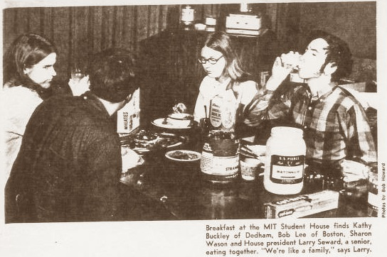
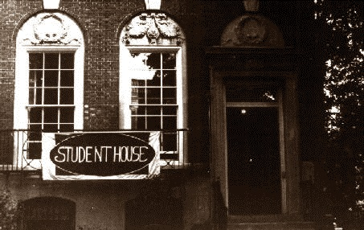

House History
Documenting the rich legacy of the Student House
The house was built in 1899. The architect also designed several other houses on the block. Originally there were two houses between 111 Bay State Road and the corner, in what is now the Swami's yard. formal, during which we honor our graduating members.
The house was owned by a doctor and his family, with the fourth floor occupied by the servants. The first floor has been restored to its original condition. During the 1960's and 1970's, the parlor on the first floor was converted into two bunk rooms (triple-decker beds) with the men's on the left and the women's on the right. In 1978, the bunks were removed and the parlor room was restored. The library on the second floor is virtually unchanged; the remaining rooms in the house have been altered to some extent to accommodate the need to house and feed students. When the bunk rooms were still in use, the house population could be as large as 36; in its current configuration, it can comfortably accommodate 26. Today there are 22 current house members and a Graduate Resident Advisor.
In the late 1960's, the house became co-ed. It was the first co-ed co-op for students in the Boston area and on the entire East Coast. The Boston Herald's predecessor, the Boston Advertiser, featured Student House in an article in the November 16, 1969 issue of the Pictorial Living Coloroto Magazine. The article discussed the issues of co-ed living on college campuses, noting that, except for Student House, there were no truly co-ed dormitories or living groups at any of the Boston-area colleges.
History of Student House, Inc.
What follows is based on a talk traditionally given by the president of the board of MIT Student House, Inc. to new members of MITSH. The original version is attributed to 'Joe' Waldo Davis.
MITSH had its origin in the generosity of a man who at first wished to remain anonymous. He lived on Bay State Road in the house diagonally opposite the other end of this block. We have never been able to find out who first had the idea of starting the Student House. It may have been someone at the Institute who saw a need in 1930 —in the early years of the Great Depression— for a cooperative house where students could live economically yet comfortably by sharing the tasks of housekeeping. Or it may have been Mr. X himself who conceived of Student House and approached MIT. In any event, this gentleman thought enough of the idea to offer to pay $2000 a year — which was approximately the rent for a house like this in those days. He continued this contribution for 22 years, until 1952.
We now know that this original benefactor was Mr. Albert Stone, Jr., a bachelor, a Boston financier, and somewhat of an eccentric. He lived the last few years of his life in virtual seclusion, and died about 1959, leaving $19 million to a Boston foundation — the Permanent Charities Fund. He apparently believed in the old New England virtues of thrift and hard work — and practiced them himself. His only stipulations in making his contribution were that there would be no drinking or gambling in the Student House.
The original Student House was at 159 Bay State Road — near the end of this block and within sight of Mr. Stone's house. A few years later, Student House moved to 59 Bay State Road. In 1940 MIT decided that Student House was viable and it would be worthwhile to purchase a house rather than rent. This house is where we are now, at 111 Bay State Road.
No one knows what made Mr. Stone decide to stop his annual contribution to support Student House —it obviously wasn't lack of funds— but in 1952 he told the Institute that he would cease his donations. This happened to be a year when the Institute had a surplus of dormitory space, and thinking of Student House as just another dorm they decided to close it.
When a group of House alumni in the area learned that the Institute could no longer justify operating the house, the group approached the Institute and asked for a stay of execution for a year — to give all the alumni a chance to organize and seek a way to save the house from extinction. The response of a large proportion of Student House alumni impressed the Institute officials so much that they offered very generous terms to make it possible for the relatively small group to raise enough money within itself to finance the purchase of the property. Out of a total of 250 alumni —some of whom had lived at the House for only a short period— about 100 pledged an average of $200 each (the equivalent of almost $1600 in 2009 dollars) to create a capital fund of $20,000. $7000 cash was collected in a short time to provide the down payment. The minimum contribution was $50 and the maximum was $500. A number of people gave $100 for each year they had lived at the house.
This is pretty convincing evidence of how strongly these people felt about keeping Student House from becoming just a memory. For the past 58 years the House has been owned and administered by MIT Student House, Inc., a non-profit corporation chartered in Massachusetts. The officers and board of directors of the corporation are all alumni — some of whom come considerable distances to meet at the House three times a year. The tradition of MIT Student House alumni 'paying it forward' continues to this day.